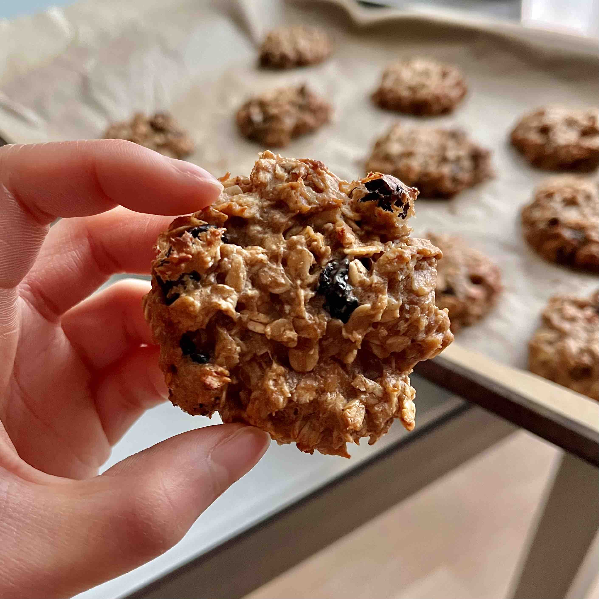

Oatmeal Raisin Cookies

Description
These are my mom's favorite type of cookie, and I particularly like this recipe since it contains healthier ingredients and no refined sugars! Recipe taken from The Roasted Root.
Ingredients
- 2 large ripe bananas
- 2/3 cup unsweetened nut butter
- 1/4 cup pure maple syrup or additional half of a large ripe banana
- 2 cups rolled oats
- 1 + 1/2 tsp ground cinnamon
- 1 tsp sea salt
- 2/3 cup raisins
Steps
- Preheat the oven to 350 degrees F and line a large baking sheet with parchment paper.
- Mash the bananas in a large bowl until creamy. Add in the almond butter and the pure maple syrup to the mixing bowl and stir all the wet ingredients together until they are well-combined. Note: if your almond butter is cold from being in the refrigerator, microwave it for 15 to 30 seconds, or until it is easy to stir.
- Pour the rolled oats, ground cinnamon and salt into the mixing bowl and stir until everything is combined. Add in the raisins and stir them into the batter. The result will be a very sticky dough - this is normal.
- Drop spoonfuls of dough onto the prepared cookie sheet, forming any size cookies you like. I make 9 large cookies, but you can go with any size. They won’t spread much while they are baking, so be sure to make the end shapes you’re going for before putting them into the oven.
- Bake for 11 to 15 minutes, or until the cookies have completely set up and the crispy edges are slightly golden brown. Smaller cookies will need about 11 minutes, whereas larger cookies will need 12 to 15.
- Remove the cookies from the oven and allow them to cool for at least 10 minutes before enjoying.
Return to homepage